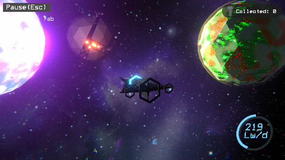
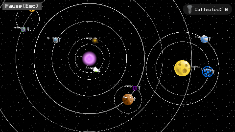
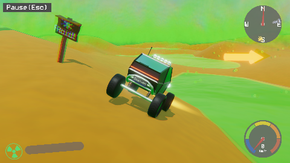

About the Game
Embark on an epic journey through an unforgiving solar system and save the world!
In the far future of the dwarven homeworld, the dwarves tried an experiment that ended up destroying their mainland.
You have to explore the diverse ecosystem of the sol and gather left-over equipment to upgrade your vessel and travel back in time. Before it's too late...
Game Screenshots


